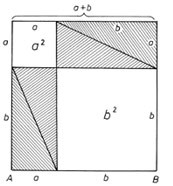

A Pitagorasz-tétel és bizonyítása
A derékszögű háromszög
Ha egy háromszögről azt mondjuk, hogy derékszögű, akkor ezzel egy adatát megadtuk. A háromszög meghatározásához ezenkívül már csak két további adatra van szükségünk.
A derékszögű háromszög oldalai között az általános háromszögre vonatkozó már említett tulajdonságon túl még szorosabb kapcsolat van. A közöttük levő összefüggést Pitagorasz-tételnek nevezzük. A korábbi években már megismertük ezt a tételt.

A Pitagorasz-tétel
Derékszögű háromszögben a két befogó négyzetének összege egyenlő az átfogó négyzetével.
(A befogó négyzetén, az átfogó négyzetén a megfelelő szakaszhosszak négyzetét értjük.)
A Pitagorasz-tétel bizonyítása
A Pitagorasz-tételnek egyik egyszerű bizonyítási módja az, amelynek alapgondolata: egyenlő területekből azonos nagyságú területeket elvéve, a maradék területek is egyenlő nagyságúak.
 
- Vegyünk két négyzetet, mindkettő oldalhossza legyen a + b. Ezeket bontsuk részekre az ábrán látható módon.
- A felső négyzetet gondolatban feldaraboltuk négy darab olyan derékszögű háromszögre, amelyek befogói a és b. Ezek azonos méretűek. Az átfogójuk is azonos hosszúságú, jelöljük c-vel. Ezenkívül két négyzetet kaptunk, az egyik a2, a másik b2 területű.
- Az előző „nagy„ négyzettel azonos területű alsó négyzetet öt részre daraboltuk. Ebből négy olyan derékszögű háromszög, amilyent az előző felbontásnál kaptunk.
- Befogóik a és b, átfogójuk c.
- Ha mindkét „nagy„ négyzetből elvesszük a minden méretében azonos (csak más helyzetű) négy-négy derékszögű háromszöget, akkor a maradék területeknek is egyenlőknek kell lenniük.
- A felső „nagy„ négyzetből két „kis„ négyzet marad, ezek együttes területe a2 + b2.
- Az alsó „nagy„ négyzetből marad a középső négyszög. Ennek minden oldala c. Minden szöge 90°, mert (például) az AB oldal P pontjánál lévő nagyságát megkapjuk, ha az egyenesszögből elvesszük a derékszögű háromszög két hegyesszögének összegét, azaz 90°-ot. Mivel a négyszög minden oldala egyenlő és minden szöge 90°, a maradék négyszög is négyzet. Területe c2.
- A kétféle módon kapott maradékterületek egyenlő nagyságúak.
Ezért:
a2 + b2 = c2.
forrás: Sulinet
Püthagorasz adatai
Táblázat:
Született Kr. e. 570 körül
Szamosz
Elhunyt Kr. e. 495 (kb. 75 évesen)
Metapontum
Házastársa Theanó
Gyermekei
Mnészarkhosz
Müia
Damo
Telauges
Arignote
Aesara
Szülei Mnesarchus
Foglalkozása
matematikus
filozófus
politikus
író
zenetudós
zeneteoretikus
Pitagorasz Matematikai Verseny